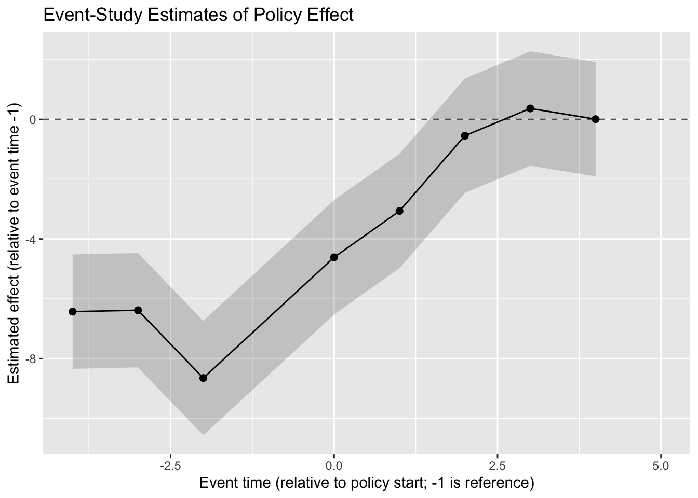

Here, time is already event time (relative to the policy start), so we can treat it as such:
Negative values: leads,
Zero and positive values: lags.
We will construct a factor for event time and choose -1 as the reference period (the last pre-treatment period).
Code
# Event time is just the 'time' variablees_data$event_time <- es_data$time# Make a factor for event time, dropping the reference period (-1)es_data$event_time_f <-factor(es_data$event_time)# We'll define the reference period as -1 (last pre-policy period)# For convenience, we keep all levels but will interpret coefficients# relative to event_time = -1.levels(es_data$event_time_f)
Interacting treat with the event-time factor (excluding the reference period).
We will:
Drop observations at event_time = -1 when interacting (so this is the reference),
Fit the model with lm().
Code
library(dplyr)# Create a factor for event_time with -1 as an explicit leveles_data$event_time_f <-factor(es_data$event_time)# We'll keep event_time_f as is, but create a version that excludes -1# for the interaction, so that event_time = -1 is the omitted reference.es_data <- es_data %>%mutate(event_time_f_no_ref =ifelse(event_time ==-1, NA, as.character(event_time)) )es_data$event_time_f_no_ref <-factor(es_data$event_time_f_no_ref)# Fit event-study regression:# Y ~ unit FE + time FE + treat: event_time dummies (excluding reference period)es_fit <-lm( Y ~factor(id) +factor(time) + treat:event_time_f_no_ref,data = es_data)summary(es_fit)
The coefficients on treat:event_time_f_no_refk (for k != -1) are the estimated event-study effects \(\hat{\beta}_k\) relative to event time -1.
3.3. Extracting and plotting event-time coefficients
We can use broom and ggplot2 to extract and visualize the \(\hat{\beta}_k\).
Code
library(broom)library(ggplot2)tidy_es <- broom::tidy(es_fit)# Keep only the treat:event_time termstidy_es_events <- tidy_es %>% dplyr::filter(grepl("^treat:event_time_f_no_ref", term))tidy_es_events <- tidy_es_events %>% dplyr::mutate(# Extract the event time k from the term nameevent_time =as.numeric(gsub("treat:event_time_f_no_ref", "", term)),conf_low = estimate -1.96* std.error,conf_high = estimate +1.96* std.error )tidy_es_events
Now we plot the coefficients by event time, including pre- and post-periods, with \(-1\) as the reference (shown as a horizontal zero line).
Code
ggplot(tidy_es_events, aes(x = event_time, y = estimate)) +geom_hline(yintercept =0, linetype ="dashed", color ="gray40") +geom_ribbon(aes(ymin = conf_low, ymax = conf_high), alpha =0.2) +geom_point(size =2) +geom_line() +labs(x ="Event time (relative to policy start; -1 is reference)",y ="Estimated effect (relative to event time -1)",title ="Event-Study Estimates of Policy Effect" )

Event-study estimates of the policy effect over event time (relative to period -1).
Interpretation:
For \(k < -1\) (leads), we hope the coefficients are around zero (no pre-trends).
For \(k \ge 0\) (lags), we should see a pattern similar to the true effects we simulated:
Small at \(k = 0\),
Growing at \(k = 1, 2, 3\),
Plateauing at later periods.
4. Why event-study matters (beyond “looking cool in graphs”)
Event-study designs add several important layers to DiD in HEOR and health policy.
4.1. Visual check of parallel trends
DiD relies heavily on the parallel trends assumption. Event-study:
Estimates pre-treatment coefficients for \(k < 0\),
Allows you to plot these pre-policy coefficients with confidence intervals,
Helps to visually check whether pre-trends seem flat (supporting the assumption) or drifting (raising concerns).
While not a formal proof, this is a powerful diagnostic and communication tool.
4.2. Dynamic treatment effects
Policies rarely have instantaneous, constant effects. With event-study you can see:
Whether the effect builds gradually as implementation ramps up,
Whether it decays as attention or funding wanes,
Whether there are “one-time shocks” versus persistent changes.
For HEOR questions like:
“Does the policy have lasting impact on utilization?”
“Does the effect on costs stabilize over time?”
…the shape of the event-study curve can be as important as the average effect.
4.3. Timing and anticipation
Event-study can reveal:
Anticipation: if effects appear before the official policy start date, maybe people started reacting earlier (or something else changed).
Delayed effects: if nothing moves at \(k = 0\) but large changes appear at \(k = 2\) or \(3\), you have a more realistic story about implementation lags.
These timing details matter a lot when planning:
Budgeting,
Staffing,
Evaluating whether a policy “failed” or just took time to work.
4.4. Communication with policymakers and stakeholders
Event-study graphs are relatively easy to explain:
X-axis: time relative to policy adoption,
Y-axis: estimated effect,
Horizontal line at 0,
Pre-period points (hopefully near 0),
Post-period points showing how the effect changes.
This makes it simpler to:
Convey uncertainty,
Discuss dynamic impacts,
Avoid oversimplifying complex policies to a single “average effect.”
5. Further reading
If you want to go deeper on event-study and modern DiD methods (especially with staggered treatment timing), here are four solid references:
Sun & Abraham (2021). Estimating Dynamic Treatment Effects in Event Studies with Heterogeneous Treatment Effects.
Journal of Econometrics. A key paper highlighting problems with “naive” event-study DiD when treatment timing varies, and proposing alternative estimators.
Callaway & Sant’Anna (2021). Difference-in-Differences with Multiple Time Periods.
Journal of Econometrics. Provides a general framework and estimators for DiD with multiple periods and staggered adoption.
Roth (2022). Pretest with Caution: Event-Study Estimates after Testing for Parallel Trends.
American Economic Review (P&P). Discusses issues with “testing parallel trends” and then proceeding as if nothing happened.
Roth et al. (2023). What’s Trending in Difference-in-Differences? A Synthesis of the Recent Econometrics Literature.
Annual Review–style overview of the modern DiD/event-study literature; very helpful for seeing the big picture.
With DiD and event-study tools in your toolkit, you can not only say whether a policy had an impact, but also when and how that impact unfolded — which is exactly the kind of nuance health policy and HEOR often demand. 😄
Source Code
---title: "Event-Study Designs in R: Watching Policy Effects Over Time"---# 1. Introduction: when you want more than a before/after selfieDifference-in-differences (DiD) is great when you want a **single number**:> “On average, the policy changed the outcome by X units.”But sometimes that’s not enough. You (or a reviewer 😅) might ask:- Did the effect **grow over time**?- Did it **fade out** after a few years?- Were there **anticipation effects** *before* the policy started?- Did something weird happen in one specific year?An event-study design basically says:> “Let’s not just compare *before vs after* — let’s estimate the effect at> each time point **relative to when the policy started**.”So instead of a single DiD coefficient, we get a **series of coefficients**:- One for each period *before* the policy (leads),- One for each period *after* the policy (lags),- All relative to a chosen **reference period** (often the year just before treatment).This gives us a dynamic picture:- Great for checking the **parallel trends** assumption,- Great for telling a richer story about how the effect unfolds.In this tutorial we will:- Show how event-study designs extend DiD,- Simulate data with a policy that has **dynamic effects**,- Estimate an event-study regression in R,- Plot the event-time coefficients with confidence intervals,- Reflect on why this matters in HEOR and health policy,- Point you to further reading.---# 2. From DiD to event-study## 2.1. Basic setupWe’ll again imagine:- Units $i$ (e.g., hospitals, regions, individuals),- Time periods $t$ (e.g., years),- A policy that starts at a certain time $t = 0$ for treated units,- A comparison group that never receives the policy.We define **event time**:- $k = t - T_i$, where $T_i$ is the time when unit $i$ is treated.- For units never treated, $T_i$ is undefined; we handle them a bit differently (more on that below).In the simplest case, all treated units get the policy at the same time, so$T_i$ is the same for all treated units.## 2.2. Event-study regression with leads and lagsA common event-study specification (with a single treated cohort) is:$$Y_{it} = \alpha_i + \lambda_t+ \sum_{k \neq -1} \beta_k \, \mathbf{1}\{\text{EventTime}_{it} = k\}+ \varepsilon_{it},$$where:- $Y_{it}$ is the outcome,- $\alpha_i$ are **unit fixed effects** (e.g., hospital-specific),- $\lambda_t$ are **time fixed effects** (common shocks over time),- $\mathbf{1}\{\text{EventTime}_{it} = k\}$ is an indicator that unit $i$ is $k$ periods away from treatment at time $t$,- We omit $k = -1$ as the **reference period** (often the last pre-treatment period),- $\beta_k$ is the **average effect** at event time $k$.Interpretation:- For $k < 0$ (leads): we expect $\beta_k \approx 0$ if parallel trends holds.- For $k \ge 0$ (lags): $\beta_k$ traces out how the policy effect evolves over time.---# 3. Example in R: synthetic event-study dataWe’ll simulate a simplified scenario:- 200 units (e.g., hospitals),- 10 time periods (labeled -4, -3, ..., 4, 5), where 0 is the first period with the policy,- Half of the units are **treated** starting at time 0,- Half are **never treated** and act as a comparison group,- The effect of the policy grows over time for treated units.Think of the outcome as something like:- Average monthly admissions per hospital,- Average cost per patient,- A quality score.```{r}#| label: es-setup#| message: false#| warning: falseset.seed(123)# Number of units and time periodsn_units <-200time_points <--4:5# event time, where 0 is first treated periodT <-length(time_points)# Half treated, half never-treatedid <-1:n_unitstreated_ids <- id[1:(n_units /2)]control_ids <- id[(n_units /2+1):n_units]# Create panel data structurees_data <-expand.grid(id = id,time = time_points)es_data$treat <-ifelse(es_data$id %in% treated_ids, 1, 0)# Unit fixed effectsunit_fe <-rnorm(n_units, mean =0, sd =5)# Time fixed effects (common shocks)time_fe <-rnorm(T, mean =0, sd =2)names(time_fe) <-as.character(time_points)# True dynamic treatment effects for treated units (lags)# k = 0, 1, 2, 3, 4, 5true_effects <-c("0"=2, "1"=4, "2"=6, "3"=7, "4"=7, "5"=7)# Baseline level (e.g., average outcome)baseline <-50# Generate outcomees_data$Y <-NA_real_for (i inseq_len(nrow(es_data))) { this_id <- es_data$id[i] this_time <- es_data$time[i] this_treat <- es_data$treat[i]# Unit and time components mu_unit <- unit_fe[this_id] mu_time <- time_fe[as.character(this_time)]# Dynamic treatment effect: only for treated units and time >= 0 effect <-0if (this_treat ==1&& this_time >=0) { k <-as.character(this_time) effect <- true_effects[k] } es_data$Y[i] <- baseline + mu_unit + mu_time + effect +rnorm(1, 0, 5)}head(es_data)```---## 3.1. Event-time variable and reference periodHere, `time` is already **event time** (relative to the policy start), so we cantreat it as such:- Negative values: leads,- Zero and positive values: lags.We will construct a factor for event time and choose **-1** as the reference period (the last pre-treatment period).```{r}#| label: es-event-time# Event time is just the 'time' variablees_data$event_time <- es_data$time# Make a factor for event time, dropping the reference period (-1)es_data$event_time_f <-factor(es_data$event_time)# We'll define the reference period as -1 (last pre-policy period)# For convenience, we keep all levels but will interpret coefficients# relative to event_time = -1.levels(es_data$event_time_f)```---## 3.2. Estimating an event-study regressionWe now estimate:$$Y_{it} = \alpha_i + \lambda_t+ \sum_{k \neq -1} \beta_k \big(\mathbf{1}\{\text{event\_time}_{it} = k\} \times \text{treat}_i\big)+ \varepsilon_{it}.$$In R, we can approximate this via:- Including **unit fixed effects** via `factor(id)`,- Including **time fixed effects** via `factor(time)`,- Interacting `treat` with the event-time factor (excluding the reference period).We will:1. Drop observations at event_time = -1 when interacting (so this is the reference),2. Fit the model with `lm()`.```{r}#| label: es-regression#| message: false#| warning: falselibrary(dplyr)# Create a factor for event_time with -1 as an explicit leveles_data$event_time_f <-factor(es_data$event_time)# We'll keep event_time_f as is, but create a version that excludes -1# for the interaction, so that event_time = -1 is the omitted reference.es_data <- es_data %>%mutate(event_time_f_no_ref =ifelse(event_time ==-1, NA, as.character(event_time)) )es_data$event_time_f_no_ref <-factor(es_data$event_time_f_no_ref)# Fit event-study regression:# Y ~ unit FE + time FE + treat: event_time dummies (excluding reference period)es_fit <-lm( Y ~factor(id) +factor(time) + treat:event_time_f_no_ref,data = es_data)summary(es_fit)```The coefficients on `treat:event_time_f_no_refk` (for k != -1) are the estimatedevent-study effects $\hat{\beta}_k$ relative to event time -1.---## 3.3. Extracting and plotting event-time coefficientsWe can use `broom` and `ggplot2` to extract and visualize the $\hat{\beta}_k$.```{r}#| label: es-coefs#| message: false#| warning: falselibrary(broom)library(ggplot2)tidy_es <- broom::tidy(es_fit)# Keep only the treat:event_time termstidy_es_events <- tidy_es %>% dplyr::filter(grepl("^treat:event_time_f_no_ref", term))tidy_es_events <- tidy_es_events %>% dplyr::mutate(# Extract the event time k from the term nameevent_time =as.numeric(gsub("treat:event_time_f_no_ref", "", term)),conf_low = estimate -1.96* std.error,conf_high = estimate +1.96* std.error )tidy_es_events```Now we plot the coefficients by event time, including pre- and post-periods,with $-1$ as the reference (shown as a horizontal zero line).```{r}#| label: es-plot#| fig.cap: "Event-study estimates of the policy effect over event time (relative to period -1)."#| message: false#| warning: falseggplot(tidy_es_events, aes(x = event_time, y = estimate)) +geom_hline(yintercept =0, linetype ="dashed", color ="gray40") +geom_ribbon(aes(ymin = conf_low, ymax = conf_high), alpha =0.2) +geom_point(size =2) +geom_line() +labs(x ="Event time (relative to policy start; -1 is reference)",y ="Estimated effect (relative to event time -1)",title ="Event-Study Estimates of Policy Effect" )```Interpretation:- For $k < -1$ (leads), we hope the coefficients are around zero (no pre-trends).- For $k \ge 0$ (lags), we should see a pattern similar to the **true effects** we simulated: - Small at $k = 0$, - Growing at $k = 1, 2, 3$, - Plateauing at later periods.---# 4. Why event-study matters (beyond “looking cool in graphs”)Event-study designs add several important layers to DiD in HEOR and health policy.## 4.1. Visual check of parallel trendsDiD relies heavily on the **parallel trends** assumption. Event-study:- Estimates pre-treatment coefficients for $k < 0$,- Allows you to **plot** these pre-policy coefficients with confidence intervals,- Helps to visually check whether pre-trends seem flat (supporting the assumption) or drifting (raising concerns).While not a formal proof, this is a powerful diagnostic and communication tool.## 4.2. Dynamic treatment effectsPolicies rarely have instantaneous, constant effects. With event-study you can see:- Whether the effect builds gradually as implementation ramps up,- Whether it decays as attention or funding wanes,- Whether there are “one-time shocks” versus persistent changes.For HEOR questions like:- “Does the policy have lasting impact on utilization?”- “Does the effect on costs stabilize over time?”…the shape of the event-study curve can be as important as the average effect.## 4.3. Timing and anticipationEvent-study can reveal:- **Anticipation**: if effects appear **before** the official policy start date, maybe people started reacting earlier (or something else changed).- **Delayed effects**: if nothing moves at $k = 0$ but large changes appear at $k = 2$ or $3$, you have a more realistic story about implementation lags.These timing details matter a lot when planning:- Budgeting,- Staffing,- Evaluating whether a policy “failed” or just took time to work.## 4.4. Communication with policymakers and stakeholdersEvent-study graphs are relatively easy to explain:- X-axis: time relative to policy adoption,- Y-axis: estimated effect,- Horizontal line at 0,- Pre-period points (hopefully near 0),- Post-period points showing how the effect changes.This makes it simpler to:- Convey uncertainty,- Discuss dynamic impacts,- Avoid oversimplifying complex policies to a single “average effect.”---# 5. Further readingIf you want to go deeper on event-study and modern DiD methods (especially with staggered treatment timing), here are four solid references:1. **Sun & Abraham (2021). _Estimating Dynamic Treatment Effects in Event Studies with Heterogeneous Treatment Effects._** Journal of Econometrics. A key paper highlighting problems with “naive” event-study DiD when treatment timing varies, and proposing alternative estimators.2. **Callaway & Sant’Anna (2021). _Difference-in-Differences with Multiple Time Periods._** Journal of Econometrics. Provides a general framework and estimators for DiD with multiple periods and staggered adoption.3. **Roth (2022). _Pretest with Caution: Event-Study Estimates after Testing for Parallel Trends._** American Economic Review (P&P). Discusses issues with “testing parallel trends” and then proceeding as if nothing happened.4. **Roth et al. (2023). _What’s Trending in Difference-in-Differences? A Synthesis of the Recent Econometrics Literature._** Annual Review–style overview of the modern DiD/event-study literature; very helpful for seeing the big picture.With DiD and event-study tools in your toolkit, you can not only say **whether** a policy had an impact, but also **when** and **how** that impact unfolded — which is exactly the kind of nuance health policy and HEOR often demand. 😄